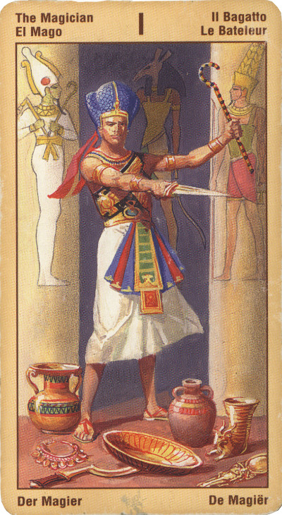

Маг
Астрологическое значение – Меркурий, “посредник”, то есть та сила, которая переносит информацию от источника к приемнику, это – дистанция, ведущая к цели. Смысл карты: ты – свободный, самостоятельный человек и должен сам принимать
решения. И выход из твоей теперешней ситуации тебе придется искать самому. Сил у тебя хватит, чтобы достичь желаемого; нужно только решиться пожелать.
Маг знает секреты созидания - он знает, как открыть себя навстречу двум аспектам созидательной энергии: вдохновению и жизненной
силе. Он знает, как сделать так, чтобы эти силы, проходя через него потоком, лились в мир, направляемые его сознанием и волей.
Значение:Все в твоих руках, говорит эта карта, главное – принять правильное решение, а дальше все пойдет само собой.
На обыденном уровне Маг может означать призыв к активному действию, к перехвату инициативы, в сознании того, что нам пока ничто не грозит (конкуренты сильно отстали). Иногда он может означать необходимость каких-то магических операций, чтобы обеспечить ровный ход событий.
Не забывайте, для того, чтобы на самом деле сделать жизнь свою жизнь волшебной и творить чудеса, вы должны объединять в себе открытость и умение сосредотачиваться на достижении своей цели.
Маг обладает таким могуществом потому, что умеет открыть себя для потока вдохновения, для духовной сущности.
Сомнения и стремление заниматься только собой и своими проблемами (которое нередко называют термином "Эго") перекрывают этот поток энергии.
Если вы сможете поверить в себя и избавиться от жизненных треволнений, вас захлестнет поток созидательной энергии. Вы сможете приступить к работе над важными и значительными проектами.
Маг - это мастер слова, в самом глубоком понимании этого термина, он знает святую силу и созидательный потенциал слова и голоса.
Первой картой колоды является маг (другое название - фокусник, волшебник), она указывает на то, что все сотворенное есть не что иное, как сон, существование фокуснически сотворенных божественных элементов, а жизнь - непрерывная азартная игра.
Над головой мага - знак бесконечности - змея, кусающая свой хвост. Она символизирует сознание, контролирующее первоэлементы мира.
В сознании заложен элемент игры, и эта игра (сознания) ведется по строгим определенным правилам и заданным "сверху" установкам, поэтому в современной интерпретации мы можем увидеть Мага, играющего с первоэлементами. Манипулируя с предметами, сознание отражается в них и определяет внутреннее "Я" человека; его истинную суть. Маг теряет абсолютную свободу воли шута, но добавляет к воле знание, делающее его мастером своего дела. Маг знает точно и достоверно, что он делает.
В прямом положении карта маг означает мастерство, ловкость и инициативу. Умение вести дела, понимать и "предвидеть" других людей - все это присуще в полной мере человеку, подразумевающемуся под этой картой. Прорыв, самовыражение, наложение неповторимого отпечатка своей индивидуальности на все, к чему прикасаются руки, - это маг. "Я хочу" - вот его девиз. Это мудрец и тиран.
Маг полон созидательной мужской силы. Его можно ассоциировать с Солнцем (на более низком уровне с Марсом). Другое название этого аркана - фокусник, а это уже проявление Меркурия. Меркурий в высокой своей ипостаси - символ Воли, Знания и Слова-Логоса, творящего миры. "Меркурий - пишет Кроули, - символизирует действие во всех своих формах и фазах... Он представляет собой бесконечный и непрерывный акт творения.
В настоящий момент вы достигли желаемого в тех пределах, которые вам подвластны, дальше - нужно "второе дыхание" - новая подпитка, как энергетическая, так и интеллектуальная (не стесняйтесь учиться ни в каком возрасте и положении), тогда вы сможете достичь новых высот и манипулировать и теми людьми, которые вам еще не подвластны.
В личном раскладе «Маг» характеризует вас как человека решительного и настойчивого: вы способны сами загореться какой-нибудь идеей и других увлечь за собой. И то, что обычным людям кажется недостижимым, вам видится лишь как очередная «вершина» на вашем нетривиальном пути.
Иными словами, вы - ярко выраженный лидер!
Если вы гадаете на ситуацию, то здесь появление в раскладе карты «Маг» означает, что весь процесс протекает под вашим непосредственным контролем. Вы - главное действующее лицо, и поэтому вам решать, в какую сторону следует повернуть ситуацию.
Но - и это очень важно! - если Старший Аркан «Маг» выпадет при гадании рядом с неблагоприятными Младшими Арканами или в перевернутом виде, то карта будет символизировать все негативные качества, проистекающие из наличия сильной воли.
В этом случае вам следует опасаться, что вы, в своем стремлении полагаться лишь на собственное мнение, перестали обращать какое-либо внимание на настроения и чувства других людей. Вы погрузились в самодовольное любование собой и своими поступками, проявляя при этом поразительную душевную черствость и бестактность.
Иными словами, вы потихонечку превращаетесь в самодура!
Не пропустите эти тревожные признаки. Ведь карты Таро - не просто способ узнать свое будущее, они - надежный помощник в исправлении недостатков собственного характера!
Все в руках этого человека - он жонглирует обстоятельствами так, как ему нужно или выгодно. Эта карта говорит: хотите что-то получить - действуйте сами!
Рекламируйте себя, свои способности... Не ищите любовь - сами вызывайте ее. Все, что происходит - очень важно. Также иногда обозначает наличие магических способностей.
В перевернутом виде он может означать, что момент выбора уже упущен, что события начали разворачиваться по своим законам, так что теперь остается лишь ждать результата, или что некто предпринимает магические операции против
вас.
Для бизнесменов – хорошая карта, призывающая к активным действиям и твердому отстаиванию своих позиций.
Карта может сигнализировать о нерешительности и неуверенности, пренебрежительном и ни на чем не обоснованном отношении как к себе (как к личности), так и к своим способностям. Карта может означать и злоупотребление властью и чудовищный эгоизм. Но не беспокойтесь - вы все равно контролируете ситуацию. Карта маг всегда положительна.
Хитроумие, интриги, мошенничество, обман, человека, играющего на чужих слабостях, чужой беде. Аферист. Недостаток самоуважения, болезненные комплексы и амбиции. Совет ничего не предпринимать, чтобы не вышло боком.